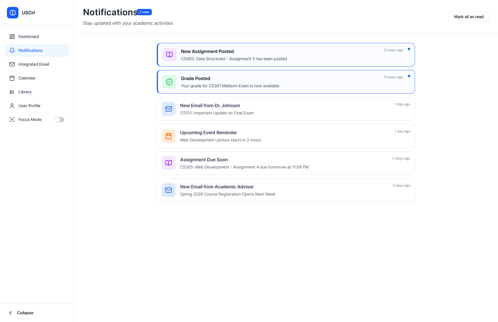
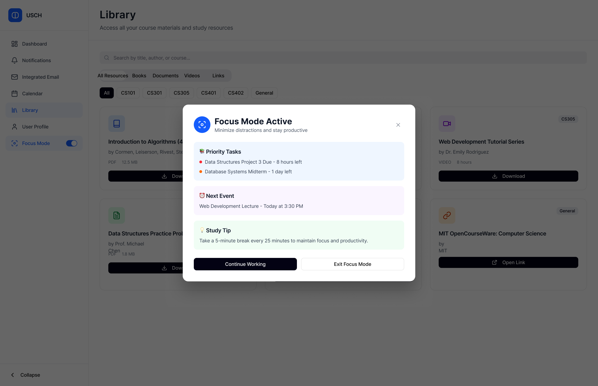

USCH · Unified Student Communication Hub
Helping students see what needs attention
A research-led dashboard concept for messages, deadlines and course resources.
An academic dashboard that makes the next action easier to spot when messages, deadlines and resources are spread across services.
- My role
- End-to-end UX research and product design
- Research
- 8 interviews and 2 moderated testing rounds
- Prototype evaluation
- 45 students tested · 80% task success · 90% ease-of-use score

The problem
One degree.
Too many places to check.
Students were navigating messages and deadlines across disconnected services. Eight interviews explored the resulting platform switching, duplicated notifications, and uncertainty about what needed attention first.
The design goal was a consistent home for academic information, with a hierarchy that helps students identify their next action.
My contribution
Listen. Structure. Prototype. Test
- Research. Conducted eight interviews and developed empathy maps to understand student communication habits.
- Information architecture. Organised a unified dashboard around priority actions, messages, calendar events and course resources.
- Interaction design. Developed wireframes and a high-fidelity Figma experience, including prioritised notifications and Focus Mode.
- Evaluation. Tested with 45 students across two moderated rounds, using feedback to refine the experience.
Validation
Clarity people could use
Prototype evaluation recorded an 80% task success rate and a 90% ease-of-use score. These describe the study, not measured changes in live student outcomes.
Inside the prototype
Help students decide what needs attention
-
Orient
Lead with the next action
The dashboard puts priority actions alongside events and important messages. The hierarchy gives students a starting point when they arrive with limited time.
-
Triage
Separate urgency from volume
The notification design makes academic priorities easier to scan. A future study could check whether students interpret the priority cues consistently across courses.

Select the image to enlarge -
Focus
Offer a quieter study view
Focus Mode gives students a dedicated way to reduce visual noise during study. A diary study could show when they choose to switch modes and what they still need to see.

Select the image to enlarge


Architecture & next steps
The interface is one part of the system
Bringing several services into one interface raises questions about identity, permissions, duplicate messages, source ownership and sync behaviour. Those are requirements for a future implementation, not completed backend features of this Figma project.
I would test lower-fidelity navigation earlier, add staff-side research, and use a short diary study to understand actual checking habits. A next technical prototype would validate one authorised integration before expanding to multiple sources.